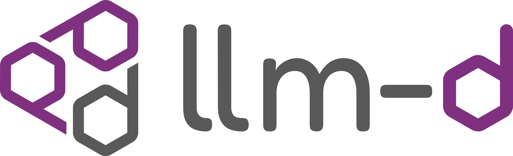

🎉 llm-d 0.5 is now released! Check out hierarchical KV offloading, cache-aware LoRA routing, resilient networking with UCCL, and scale-to-zero autoscaling. Read the announcement →

llm-d: a Kubernetes-native high-performance distributed LLM inference framework
llm-d is a well-lit path for anyone to serve at scale, with the fastest time-to-value and competitive performance per dollar, for most models across a diverse and comprehensive set of hardware accelerators.
 Check the Prerequisites
Check the Prerequisites Run the Quickstart
Run the Quickstart Explore llm-d!
Explore llm-d!